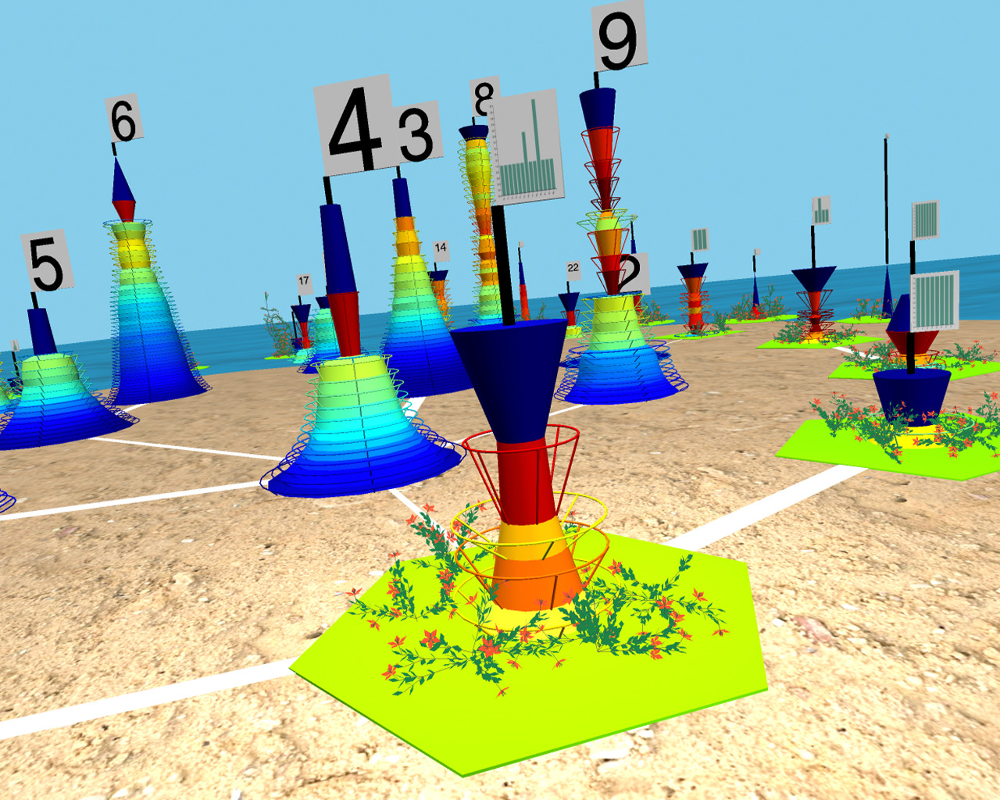

|

|
|
Abstract:
Graph Cities are the 3-D visual representations of partitions of a graph edge set into maximal connected subgraphs, each of which is called a fixed point of degree peeling. Each such connected subgraph is visually represented as a Building. A polylog bucketization of the size distribution of the subgraphs represented by the buildings generates a 2-D position for each bucket. The Delaunay triangulation of the bucket building locations determines the street network. We illustrate Graph Cities for the Friendster social network (1.8 billion edges), a co-occurrence keywords network derived from the Internet Movie Database (115 million edges), and a patent citation network (16.5 million edges). Up to 2 billion edges, all the elements of their corresponding Graph Cities are built in a few minutes (excluding I/O time). Our ultimate goal is to provide tools to build humanly interpretable descriptions of any graph, without being constrained by the graph size.
|

![[PHOTO]](../../images/knight_small.png)